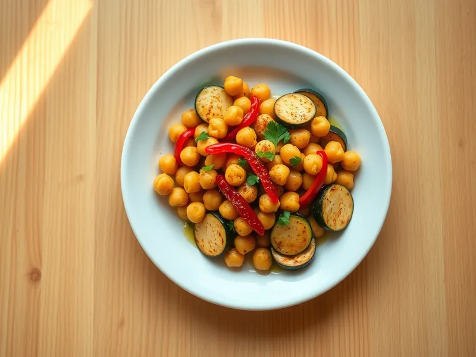

Нут с кабачком и перцем на сковороде
Консервированный нут, обжаренный с кабачком, перцем и паприкой до румяных боков
20 мин2 порц.412 ккал на порциюБ 13 · Ж 19 · У 50Средиземноморская кухня
Открыть в приложении: порции, таймеры, список покупок
Продукты на 2 порц.
- Нут1 банка
- Кабачок1 шт
- Перец болгарский1 шт
- Лук репчатый1 шт
- Чеснок2 зуб.
- Оливковое масло2 ст. л.
- Паприка1 ч. л.
- Зира2 щеп.
- Лимон1 ст. л.
- Соль1 щеп.
- Петрушка по желаниюпо вкусу
Как готовить
- Нут откиньте на дуршлаг и обсушите полотенцем. Кабачок нарежьте полукружьями, перец полосками, лук полукольцами, чеснок мелко.
- Разогрейте масло на сильном огне и обжарьте нут 5 минут, встряхивая сковороду, пока он не подрумянится и не станет чуть хрустящим снаружи.
- Добавьте лук и перец и жарьте 3 минуты, затем кабачок и жарьте ещё 5 минут, пока он не станет золотистым по краям, но не развалится.
- Всыпьте паприку, зиру, чеснок и соль, перемешайте 1 минуту.
- Снимите с огня, сбрызните лимонным соком и посыпьте петрушкой.
Совет. Сухой нут подрумянивается лучше: обязательно обсушите его, иначе масло будет стрелять.